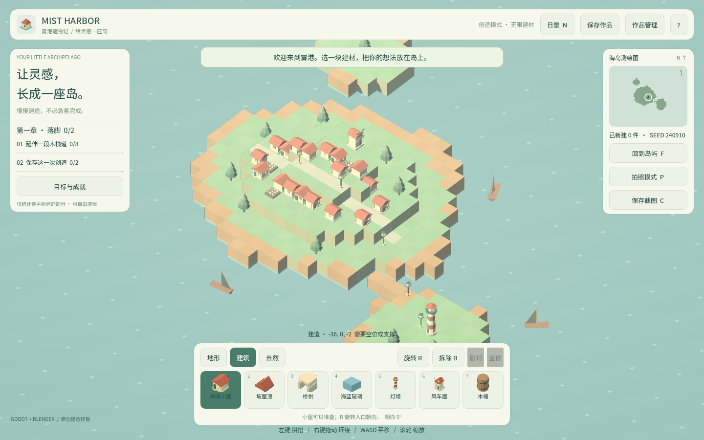
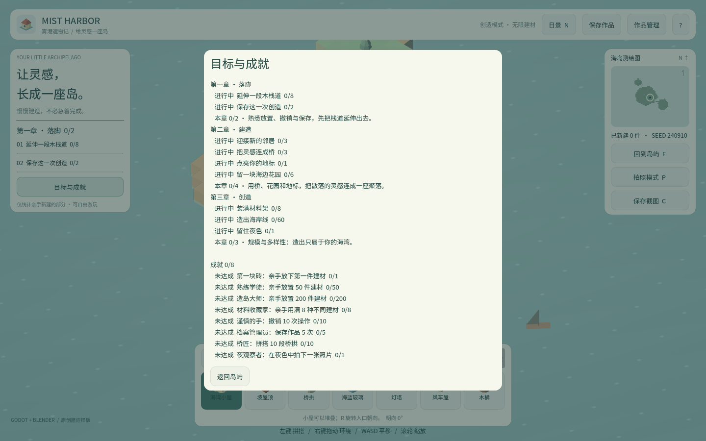

卷 6 · 第 32 章 CI、字体子集与 Git 工作流：让项目"能交付给第二个人"
本章目标：把"能跑"升级为"可协作、可复现、可自动验证"——
CI 跑什么、字体子集怎么在不改观感的前提下扩展、Git 工作流怎么守住秘密。
对应任务：T44–T48 | 对应文件：tools/dev.py、tools/build_font_corpus.py、.gitignore
32.1 CI 该跑什么：只跑"零依赖"的那一层
回顾第 29 章的三层：
| 层 | 是否进 CI | 理由 |
|---|---|---|
| --- | --- | --- |
| L1 模型层（56 项） | ✅ 必跑 | 纯逻辑、秒级、不需要 GPU |
| L2 场景层（12 项） | ✅ 建议跑 | 需要渲染/物理帧，CI 用 dummy 驱动可行 |
| L3 浏览器层（23 项） | ⚠️ 定时/发布前 | 需 Playwright + Chromium，慢（1–2 分钟） |
# .github/workflows/ci.yml（示意）
- run: python tools/fetch_templates.py # 模板（或镜像预置）
- run: python tools/dev.py test # L1 + L2，失败即退出码非 0
- run: python tools/dev.py export-web # 顺带验证导出链路📌 CI 能成立的前提：命令用退出码表达成败（第 29 章的
quit(1)）。
如果只打印日志不返回非零，CI 永远绿——那是最危险的假象。
本仓库当前没有 CI 配置文件，这是明确的待办（见 TOOLCHAIN.md）。
32.2 一次真实的踩坑：CI 被"写死的数量"骗红
tools/dev.py test 曾这样判定：
if 'WORLD_TEST_RESULT passed=42 failed=0' not in model:
raise RuntimeError('Expected baseline test summaries missing')测试增长到 56 项后，它开始永远失败（exit=1）——
虽然测试其实全绿。这正是第 31 章那条原则的现身说法。
修法是解析而不是写死：
model_summary = re.search(r'WORLD_TEST_RESULT passed=(\d+) failed=(\d+)', model)
# failed 必须为 0；passed 必须 > 0（防止"零断言也算通过"）| 教训 | 说明 |
|---|---|
| --- | --- |
| 约束写死，统计推导 | failed == 0 是约束，可以写死；passed == 42 是统计，必须推导 |
| 防假绿 | 只判 failed==0 不够——万一套件没跑（0 项）也是 0，所以要 passed > 0 |
| CI 里的假红比假绿便宜 | 假红会被立刻发现；假绿会一直骗人 |
32.3 字体子集：扩展而不改观感
shipped 字体 harbor-sc.ttf 只有 299 KB，因为它是子集（只含游戏会用到的字）。
新增文案时怎么办？直接重新子集会改变字重与间距，整站观感变化——本项目用了一个巧妙做法：
1. 收集游戏里可能出现的所有字符（脚本扫源码 + 数据）
2. 保留 base 字体不动（tools/fonts/harbor-sc-base.ttf）
3. 只从源字体里子集出 base 缺的那些字
4. 合并进去E:/Mist_Harbor/.venv-mcp/Scripts/python.exe tools/build_font_corpus.py| 要点 | 说明 |
|---|---|
| --- | --- |
| base 不动 | 已发布的字形不被替换 → 观感不漂移 |
| 增量补充 | 只加缺的字 → 体积增长可控 |
| 源字体许可 | Noto Sans SC OFL 1.1（可商用，需保留许可声明） |
| 依赖 | fonttools；源字体放 .codebuddy/local/（不入库） |
📌 这是"增量而非重建"在字体治理上的应用，与第 16 章"重跑不动文案"是同一种思路。
32.4 Git 工作流：三条硬规则
main（唯一主干，始终可运行）
└─ feat/<主题> 改完跑 dev.py test 再合并| 规则 | 做法 |
|---|---|
| --- | --- |
| ① 秘密不入库 | 令牌放 .codebuddy/local/（已 gitignore）；模板入库（tools/*.example.json） |
| ② 不入库二进制垃圾 | .godot/、build/、logs/、.venv-mcp/、.codebuddy/ 全部忽略 |
| ③ 提交前跑测试 | python tools/dev.py test（L1+L2，秒级） |
提交信息约定（本仓库一直在用）：
<类型>: <一句话摘要>
- 要点 1
- 要点 2类型用 教程: / 修复: / 资产: / 工具: / 文档: 等中文前缀，
正文说明"为什么"，而不只是"改了什么"。
32.5 交接清单：换一个人也能跑起来
1. 装 Godot 4.7（版本必须与 project.godot 的 features 一致）
2. 复制 tools/tools.example.json → .codebuddy/local/tools.json，改路径
3. python tools/fetch_templates.py（装导出模板，约 1.28 GB，可续传）
4. python tools/dev.py test 应通过
5. python tools/dev.py export-web 应产出 build/
6. （可选）复制 tools/pilot.example.json → .codebuddy/local/pilot.json 填远程凭据这套流程的判据：一个新人在干净机器上照做，不需要问任何人。
🌩 在云端 agent（web-cb）里是什么样
| 🖥 本地路线 | 🌩 云端 agent（web-cb） | |
|---|---|---|
| --- | --- | --- |
| CI | 本地/自建 runner | 云端原生流水线——L1/L2 零依赖，是最划算的门禁 |
| 模板 | 每人下载 1.28 GB | 云端镜像预置一次，全员复用 |
| 字体工具链 | 本地 venv + fonttools | 云端同样可跑；建议把字体产物入库（避免每台机器结果不同） |
| 秘密 | .codebuddy/local/ | 平台凭据托管，比本地文件更安全 |
| 交接 | 文档 | 云端可做到"打开就能跑"——但要保证版本与模板一致 |
🌩 云端最大的收益：新人零配置。前提是镜像里的引擎版本与工程声明严格一致。
32.6 常见坑速查（本章）
| 现象 | 原因 | 处理 |
|---|---|---|
| --- | --- | --- |
| CI 永远绿 | 命令不用退出码表达失败 | 检查 quit(1) 与 raise |
| CI 假红 | 判定里写死了数量 | 改为解析（32.2） |
| 套件没跑却显示通过 | 只判 failed==0 | 加 passed > 0 |
| 字体观感变了 | 重新子集了整个字体 | 用增量方案（base 不动） |
| 换机器跑不起来 | 路径写死在入库文件里 | 用 .codebuddy/local/ + example 模板 |
| 令牌被提交 | 秘密放进了受控目录 | 放 gitignore 的本地文件 |
32.7 本章作业
- 说明 CI 里该跑哪两层、为什么，以及"命令用退出码"为何是前提
- 复述 32.2 的踩坑：为什么写死 42 会失败，正确判定要同时满足哪两个条件
- 说明字体"增量补充"为什么能保持观感不变
- 按 32.5 的清单，在一台干净目录里 clone 本仓库并跑通前五步，记录卡住的地方
🎓 教学提示（给教师 / 直播主）
- 概念锚点：可交付 > 能运行。第二个人能不能跑起来，才是工程化与否的分水岭。
- 课堂演示：把
dev.py的判定改回写死 42，看 CI 变红而测试其实全绿。 - 高频误解：学生以为 CI 就是"自动跑一下"。强调：退出码 + 防假绿。
- 讨论题：你的项目换一台机器要几步？哪一步最可能卡住？
- 批改要点：作业 2 要答出
failed==0且passed>0两个条件。
🖼 本章图集


📹 录屏分镜（10 分钟）
| 时间 | 画面 | 解说词要点 |
|---|---|---|
| --- | --- | --- |
| 00:00–01:40 | 三层 × 是否进 CI | "零依赖的那层最该进 CI。" |
| 01:40–03:30 | 写死 42 的假红现场 | "统计不能写死，约束可以。" |
| 03:30–05:00 | 字体增量方案 | "base 不动，观感不漂。" |
| 05:00–06:30 | Git 三条硬规则 | |
| 06:30–08:30 | 六步交接清单 | "新人不需要问任何人。" |
| 08:30–10:00 | 作业 + 卷 6 小结 |
🎬 视频位（待录制）
把录好的视频放到course/media/video/32/（mp4 / webm / mov），重新执行 python tools/course_build.py 即会自动内嵌；首帧默认用本章第一张截图作为封面。分镜脚本见上一节。🖼 配图清单
| 文件名 | 内容 | 生成方式 |
|---|---|---|
| --- | --- | --- |
32-game-ui-fonts.png | 中文 UI 与字体渲染效果（子集的成果） | python tools/course_capture.py --chapter 32 |
32-progress-text.png | 含大量中文的进度面板（字形覆盖验证） | 同上 |
🎥 直播脚本（L3 片段，12 分钟）
- 开场："把项目交给同事，他会卡在第几步？"
- 演示：干净目录 clone → 照清单跑，现场记录卡点
- 互动：让观众列出自己项目的"新人上手清单"
- 收尾：卷 6 小结 + 预告卷 7 商业化
❓ 本章 FAQ
Q：.codebuddy/ 被忽略，那工具路径怎么共享？
A：靠 tools/tools.example.json 模板——新人复制后改路径。秘密同理（pilot.example.json）。
Q：字体子集产物要入库吗？
A：要。它是构建产物但又是运行时必需，且依赖本地 fonttools 版本；
入库能保证所有人拿到同一个字体（避免"我这边字不一样"）。
Q：CI 要不要跑浏览器验收？
A：建议放在发布前或定时任务，不放每次提交——它慢（1–2 分钟）且依赖浏览器。